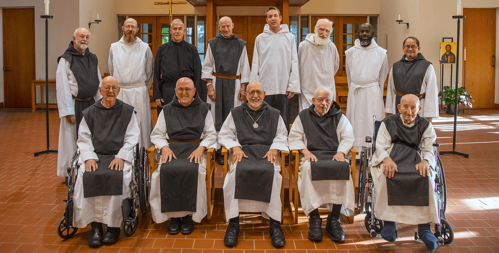
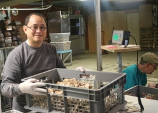
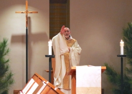
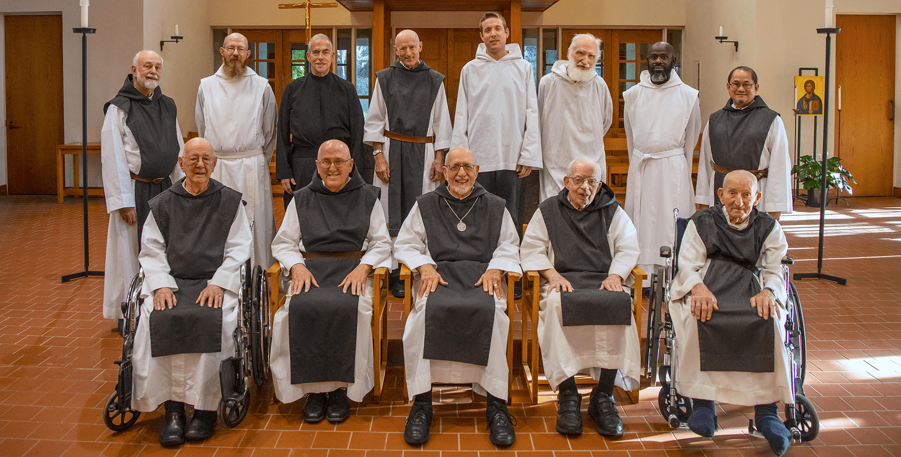

The Brothers
Mepkin Abbey is a community of Roman Catholic monks belonging to the world-wide Order of Cistercians of the Strict Observance popularly known as Trappist.
Who We Are
Our Daily Life
Vacations

Mepkin Abbey is a community of Roman Catholic monks belonging to the world-wide Order of Cistercians of the Strict Observance popularly known as Trappist.
